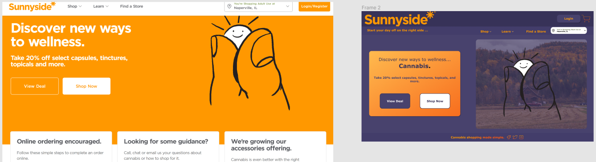
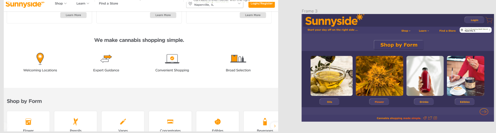
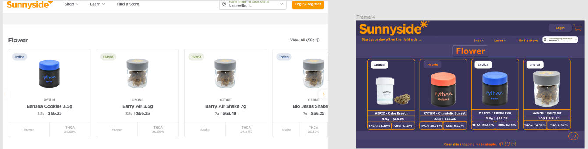
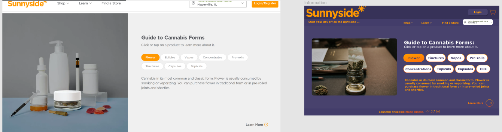
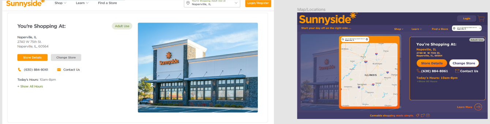

for the Sunnyside* feature with green for cannabis. The colors I put together did not look professional nor clean within the website.
I decided to go with a purple to compiment this existing orange hue. On their homepage, the was no mention of cannabis only smaller products
that could be related to cannabis. Next to the text, there was an sun positioned between two fingers, and my take was this graphic represented a nugget
of cannabis flower. I like the original image but changed the text and added a farm graphic make the product pop, and to represent growing the product
I gave them a small slogan of, "Start your day off on the right side ..." which plays off the "Sunnyside*" theme. I created separation between the company

Shop Page
For this page, I wanted there to be a visual image to the product to help guide the user in the correct direction. The image makes the item stand out and
give some indication on what the product is for new users. To accompany each image the name will be place underneath in a clickable button that would transition
into a more detailed page specific to the indicated product. As you can see with the "Flower" button being highlighted, given that it is clicked it will
take the user to the more detailed page... continued below.

Flower Page
The more detailed "Flower" page needed to have more contrast between the background and the product. This darker purple contrast well with the flower giving it more
detail. I designed the titles for each products' strain in the top left corner of the individual boxes. This provides an easier indicator for the users who know which
strain they prefer. Under the product image are strain names and details on the dosages within flower. The white on the darker background with individual orange lines
to separate this information makes it less difficult on the eyes to determine with information being read by the user. The arrow in the bottom left is intended to be used
for scrolling through the variety of flower at hand. With this in my Figma design file there is another title for the Sativa strain that is orange with purple text. The
choice of the colors for the titles correlate to the effects of each strain on the individual. For example, Indica is a mellow high so it can be represented by a dull white
color. While Sativa is a more active and hyper high, making the vibrant orange a good representation for its effects. Combining the two with the Hybrid, the strain still has
the calmness of the Indica with the purple, while also having that more active indication of the vibrant orange as the text.

Guide Page
Starting on the left of this page with the images, I went with a more detailed image of the Flower and in my opinion fitting the color scheme of my layout. The original Sunnyside*
picture would fit the new page design; the extra image was to introduce options for the company. I like the layout from the original of this page, however designed the buttons to
out more to the user. As each individual button containing the product is clicked, information about the selected product would appear underneath in the orange text. I tried purple
instead of white for the buttons' background, yet it did not provide enough contrast to the background for my liking.

Map Page
The main feature that needed to be added to the Map page was an actual gps map within the webpage. With this I wanted it to be on the left and the information on the selected store to
be place on the right. This gives the user to option, reading from left to right, to select their desired store and then receiving the information about it on the left. For my design, again,
I wanted to the features to pop out at the user. However, my design for the information of the selected store could be spaced out vertically more than it is currently, mimicking that spaced
style of the original webpage. The original spacing gives the user more room for error when trying to precisely click on the desired button such as "Store Details" or "Contact Us".

Bottom Page
s
The original layout for this Sunnyside* page was fine, it just needed to be adapted to the new color scheme. Given that I did not have access to the original image for the variety of forms, I
just used the ones already on the page by cropping them and adjusting their positioning. The middle section with "Forms" and "Collections" get lost in the background on the original design, while
keeping them as a secondary eye-catcher, they still contrast better with the darker purple background.